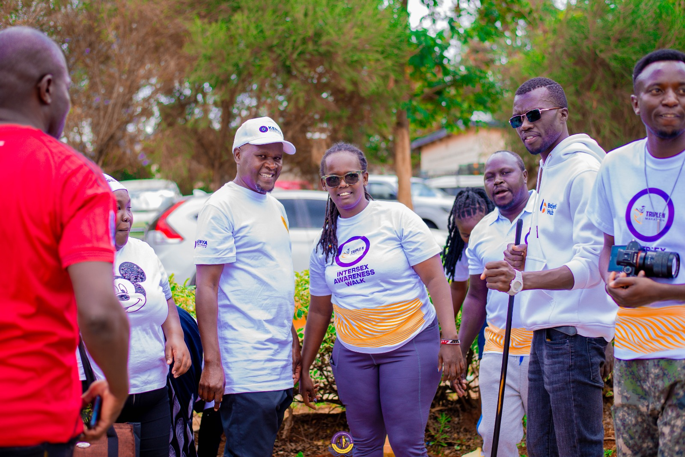

Together for Intersex Families: Commissioner Dr. Wamalwa Dennis Joins Walk to Promote Visibility and Inclusion

In a powerful show of solidarity and advocacy, Commissioner Dr. Wamalwa Dennis of the Kenya National Commission on Human Rights (KNCHR) joined the Association of Intersex Parents Movement (AIP) for an Intersex Persons Walk held under the theme “Together for Intersex Families.”
The walk brought together parents, intersex persons, human rights advocates, and supporters from diverse sectors who share a common vision — a Kenya where intersex persons and their families live with dignity, inclusion, and equality.
The day’s theme, Together for Intersex Families, underscored the vital role families play in nurturing, protecting, and affirming intersex children. It highlighted that beyond laws and policies, family acceptance forms the foundation for a supportive and inclusive society.
Speaking during the event, Commissioner Dr. Wamalwa Dennis reaffirmed KNCHR’s unwavering commitment to advancing the rights of intersex persons and supporting the full implementation of the Intersex Persons Bill, 2024. He emphasized that protecting intersex persons is not merely a legal duty but a moral imperative that calls for empathy, education, and inclusion at all levels of society.
“Today’s walk is a statement that no intersex person should walk alone. Families are the first line of love and protection, and when they stand together, society follows. We must continue to amplify visibility, promote inclusion, and protect the rights of intersex persons and their families,” said Commissioner Dr. Wamalwa.
The walk also provided an opportunity for parents and intersex advocates to share personal stories of resilience, progress, and the continuing challenges faced by intersex persons in Kenya. It highlighted the importance of partnership between state institutions such as KNCHR and community-based movements like AIP in shaping responsive policies and fostering public understanding.
As the walk concluded, participants reiterated their collective commitment to ensuring that intersex persons are recognized, supported, and celebrated — not stigmatized or hidden. The day served as a reminder that inclusivity begins with awareness, grows through acceptance, and thrives through action.
In closing, Commissioner Dr. Wamalwa Dennis expressed gratitude to AIP for its tireless advocacy and to all who continue to walk the journey toward equality.
“Our shared efforts are building a more inclusive future — one where every intersex person can live proudly, supported by family, and protected by society,” he concluded.
The Intersex Persons Walk stands as a symbol of hope and unity — a call for all Kenyans to come together in recognition that human rights are universal, and family support is the cornerstone of acceptance and dignity for all.